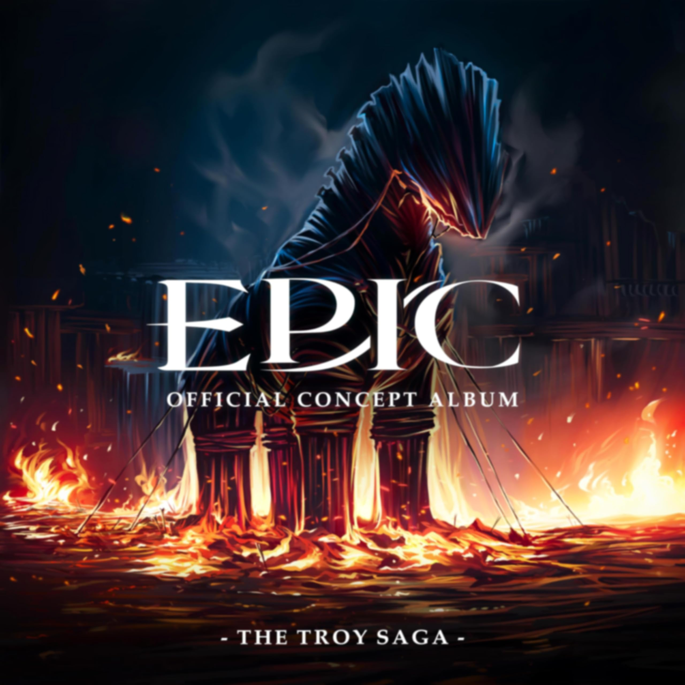
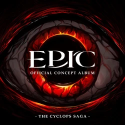
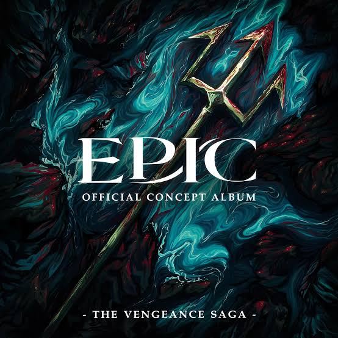

The Ocean Saga

Epic: The Musical (EPIC) est une série de neuf albums conceptuels (appelés « sagas ») écrite et composée par Jorge Rivera-Herrans.
Libre adaptation de l'Odyssée d'Homère, inspirée par les comédies musicales, elle raconte le retour chez lui du héros Ulysse (Odysseus en grec, et dans le monde anglophone), qui, après la guerre de Troie dans laquelle il a joué un rôle déterminant, met dix ans à revenir dans son île d'Ithaque, pour y retrouver son épouse Pénélope, et son fils Télémaque. En chemin, il devra affronter dieux, monstres et tempêtes.

Après dix années à combattre avec les grecs lors de la guerre de Troie, Ulysse, roi d’Ithaque, mène avec succès l’invasion et le sac de la ville de Troie avec ses hommes, grâce à sa ruse du Cheval de Troie. Lors des combats, Zeus roi des dieux, envoie une vision à Ulysse, l'informant que s'il ne tue pas le nourrisson Astyanax, fils d'Hector, celui-ci grandira et se vengera d'Ulysse et de sa famille (The Horse and the Infant).
Ulysse se débat avec sa conscience face à cette décision, pensant à son propre fils Télémaque quand il voit les yeux de l'enfant mais finit par tuer le bébé en le jetant du haut du mur de la ville (Just a Man).
Athéna apparaît à Ulysse pour lui révéler l'île d'Ithaque, vers 1765 Après le sac de Troie, Ulysse et sa flotte composée de six cents hommes, font voile vers leur patrie, Ithaque. À la recherche de nourriture pour ses hommes, Ulysse et son meilleur ami Polites partent en éclaireurs sur une île inconnue (Full Speed Ahead).
Face à Ulysse sur ses gardes Polites tente de le convaincre de tourner la page de la guerre et d'« accueillir le monde à bras ouverts ». Ils rencontrent les malicieux mangeurs de lotus, un fruit qui fait oublier tout souvenirs à quiconque en mangent, et les orientent vers une grotte à l'Est pour y trouver de la nourriture (Open Arms).
La déesse Athéna, mentor d'Ulysse depuis son adolescence, réalise que son protégé s'éloigne de ses préceptes de prudence et de sagesse sous l'influence de Politès. Elle se manifeste et fait revivre à Ulysse le souvenir de leur première rencontre afin de lui rappeler ce qu'elle attend de lui et de le prévenir de ce qu'il deviendra en étant trop bon. (Warrior of the Mind).

En arrivant sur l'île que les mangeurs de lotus leur ont indiquée, Ulysse et un groupe d'éclaireurs trouvent une grotte remplie de moutons et abattent l'un d'eux pour se nourrir. Le propriétaire du troupeau, le cyclope Polyphème, surgit en furie et menace de manger le groupe en rétribution. Ulysse tente de le raisonner et offre au cyclope un verre de fin vin grec en guise de paiement pour le mouton. Polyphème accepte le vin avant de demander à Ulysse son nom, ce à quoi Ulysse répond qu'il s'appelle « Personne ». Polyphème remercie « Personne » pour le vin, mais attaque tout de même ses hommes (Polyphemus).
Ulysse rassemble ses compagnons pour combattre Polyphème, avec succès pour un temps, mais le cyclope récupère une massue géante qui lui donne l'avantage. Il massacre plusieurs hommes, dont Polites, avant de s'évanouir (Survive).
Révélant qu'il a drogué le vin avec des fruits de lotus et profitant de l'état d'inconscience du cyclope, Ulysse exhorte ses hommes à se battre en mémoire de leurs camarades morts, leur ordonnant d'utiliser leurs épées pour aiguiser la massue et en faire une lance. Ils empalent Polyphème lui crevant l'œil, ses cris de douleur attirent d'autres cyclopes, qui demandent à Polyphème qui l'a blessé. Il répond qu'il a été blessé par « personne », incitant les autres cyclopes à lui demander de se taire si « personne » ne l'a blessé. Ulysse et ses hommes volent ensuite les moutons du cyclope aveuglé et s'échappent, mais Athéna apparaît à nouveau et lui ordonnant d'achever son ennemi. Ulysse ignore son conseil et dans un acte d'hybris révèle son vrai nom à Polyphème (Remember Them).
Athéna furieuse de le voir ainsi ignorer ses principes de prudence et de sévérité, annonce après une violente dispute à Ulysse qu'elle renonce à son rôle mentor et à leur amitié (My Goodbye).
Alors que Ulysse et les membres survivants de l'équipage poursuivent leur route, ils affrontent une violente tempête et découvrent une île flottante. Ils tentent d'y accéder en la harponnant afin d'y grimper (Storm).
Ulysse décide de se rendre sur l'île pour demander l'aide du dieu du vent Éole, mais Euryloque, son second, lui fait remarquer à quel point ce plan est risqué. Ulysse le prend à part et lui demande de suivre les ordres et de ne pas contredire ses plans en particuliers devant leurs hommes (Luck Runs Out).
En arrivant sur l'île flottante, Éole confie à Ulysse un sac de vent magique qui lui permettra de rentrer chez lui, à condition qu'il ne soit pas ouvert durant la traversée. Avant le départ de la flotte, les serviteurs d'Éole répandent la rumeur que le sac contient un trésor, semant ainsi la discorde au sein de l'équipage. Ulysse et son équipage atteignent presque les rives d'Ithaque, mais le sac est ouvert par l'équipage pendant le sommeil d'Ulysse. Ulysse et Euryloque referment rapidement le sac pour emprisonner les vents restants, mais la flotte emportée par les vents violents se retrouve près des terres des Lestrygons (Keep Your Friends Close).
Le dieu de la mer Poséidon apparaît alors, révélant qu'il est le père du cyclope Polyphème, jurant de se venger de la douleur qu'Ulysse a causée à son fils. Lui enseignant la leçon que la cruauté est la sécurité en temps de guerre. Il coule tous les navires à l'exception de celui d'Ulysse, ne laissant que quarante-trois hommes sous son commandement. Avant que Poséidon ne puisse détruire le dernier navire, Ulysse libère le dernier vent du sac d'Éole, ce qui lui permet de s'échapper (Ruthlessness).

Échoué sur une île, Ulysse envoie une équipe d'éclaireurs, dirigée par Euryloque, explorer l'île. Ils rencontrent l'enchanteresse Circé, qui les transforme tous en cochons, à l'exception d'Euryloque. Alors qu'Euryloque rapporte la nouvelle à Ulysse, les deux hommes se disputent pour savoir s'ils doivent affronter Circé pour sauver leurs hommes ou reprendre la mer pour réduire leurs pertes, Ulysse finit par se diriger vers le palais de Circé (Puppeteer).
Le dieu Hermès apparaît à Ulysse et lui offre l'herbe magique « moly », qui lui permettra d'égaler la puissance magique de Circé en manifestant une créature de son esprit (Wouldn't You Like).
Circé et Ulysse s'affrontent et Ulysse prend le dessus (Done For)
Changeant de tactique, Circé tente de séduire Ulysse, mais celui-ci rejette ses avances et lui révèle sa détermination à retourner auprès de sa femme, Pénélope. Touchée, Circé accepte de laisser partir ses hommes, leur donnant accès aux Enfers dans le monde souterrain, où ils pourront demander conseil au prophète aveugle Tirésias (There Are Other Ways).

Descendus dans le monde souterrain, Ulysse et son équipage traversent les enfers et rencontrent les âmes de sa flotte tuée, y compris celle de son ami Polites, du nourrisson Astyanax, mais aussi d’Anticlée, la mère d'Ulysse qui découvre le décès de celle-ci alors qu’elle attendait fidèlement le retour de son fils (The Underworld).
Ulysse fini par rencontrer Tirésias le devin, qui lui annonce que bien qu'il ait une vision clairvoyante du passé et de l'avenir, il ne peut percevoir un avenir dans lequel Ulysse reviendrait indemne chez lui (No Longer You).
Affligé, Ulysse décide de renoncer à son côté miséricordieux, embrassant l'impitoyabilité et se préparant à rentrer chez lui par tous les moyens nécessaires, en écho avec la philosophie de Poséidon (Monster).

Alors qu'il navigue en mer, Ulysse a une vision de Pénélope. Il lui demande de quelle manière il peut retourner chez lui, et elle lui révèle qu'il ne peut le faire qu'en passant par l'antre du monstre marin à six têtes Scylla, là où même Poséidon ne pénètre jamais. Elle demande alors à Ulysse de la rejoindre dans l'eau, affirmant qu'elle le délivrera de toutes ses souffrances (Suffering).
Ulysse semble céder à ses avances, avant de l'attaquer, révélant qu'elle est une sirène déguisée. Il dévoile que lui et son équipage ont résisté aux chants magiques en se bouchant les oreilles avec de la cire d'abeille, et que pendant leur conversation son équipage a capturé le reste des sirènes. Les sirènes demandent grâce, mais Ulysse jure de ne pas commettre la même erreur qu'avec Polyphème et ordonne à son équipage de toutes les tuer (Different Beast).
L'équipage navigue ensuite jusqu'à l'antre de Scylla, où Euryloque révèle à Ulysse que c'est lui qui a ouvert le sac des vents du dieu d'Éole. L'ignorant, Ulysse lui ordonne d'allumer six torches et les distribuer à des hommes pendant qu'ils naviguent dans l'antre sombre de Scylla. Scylla, attirée par les lumières, mange les porteurs de torches, ce qui permet au navire de s'échapper avec seulement six victimes (Scylla).
Furieux qu'Ulysse ait accepté de sacrifier six de ses hommes, Euryloque prend la tête d'une mutinerie, blessant et emprisonnant Ulysse. Le navire accoste sur l'île la plus proche, qui se trouve être la demeure du dieu soleil Hélios. Malgré les avertissements d'Ulysse, Euryloque abat l'un des bœufs sacrés d'Hélios (Mutiny).
Hélios envoie Zeus pour juger l'équipage, ce dernier oblige Ulysse à choisir entre sa propre vie et celle des autres membres de l'équipage. Ulysse choisit finalement de sacrifier son équipage, et Zeus les tue tous à l'exception d'Ulysse (Thunder Bringer).

Sept ans plus tard, à Ithaque, Télémaque, le fils d'Ulysse a maintenant vingt ans et aspire à devenir un héros légendaire comme son père, en espérant ainsi pouvoir protéger sa mère, Pénélope, de ses prétendants de plus en plus violents (Legendary).
Pour défendre l'honneur de sa mère il tient tête au prétendant Antinoüs, mais il est sévèrement battu lors de la confrontation avant qu'Athéna n'apparaisse et ne lui vienne en aide (Little Wolf).
Lorsque Télémaque demande à Athéna pourquoi elle l'a aidé, elle évoque sa relation avec Ulysse et ses regrets quant à leur dispute et leur séparation. Télémaque, ignorant qu'elle fait référence à son père, encourage la déesse à tendre la main à son vieil ami et à renouer leur relation (We'll Be Fine).
Athéna décide de consulter les souvenirs d'Ulysse pour découvrir ce qui lui est arrivé depuis leur séparation, et découvre qu'il a été piégé sur l'île d'Ogygie par la déesse Calypso, qui depuis tente sans relâche de séduire Ulysse. Au fil des ans, Ulysse est devenu de plus en plus désespéré et désireux de s'échapper de l'île, étant même prêt à sauter d’une falaise pour ne plus être hanté par les fantômes de ses amis morts (Love in Paradise).
Sur le mont Olympe, Athéna demande à son père, Zeus, de libérer Ulysse, Zeus lui propose un pari. Il organise une rencontre où Athéna devra convaincre cinq autres dieux de l'Olympe — Apollon, Héphaïstos, Aphrodite, Arès et Héra — qu'Ulysse mérite d'être libéré, Zeus acceptera de le relâcher s'ils sont tous convaincus. Athéna utilise son esprit et sa sagesse pour convaincre les autres dieux. Victorieuse, elle demande à Zeus de respecter sa part du marché. Irrité, il attaque Athéna avec sa foudre l'accusant de l'avoir ridiculisé, mais la déesse survit et plaide à nouveau pour la liberté d'Ulysse (God Games).

Calypso fait ses adieux à Ulysse avant qu'il ne quitte Ogygie, exprimant des remords pour la douleur qu'elle lui a causée en le retenant sur son île, mais déclarant qu'elle n'est pas désolée de l'amour qu'elle éprouve pour lui (Not Sorry For Loving You).
Hermès apparaît à nouveau, offrant ses conseils et un sac des vents d'Éole pour aider Ulysse à rentrer chez lui sur un radeau, le prévenant néanmoins que la route sera dangereuse (Dangerous).
Ulysse échappe au monstre marin Charybde avant d'atteindre les côtes d'Ithaque, où il rencontre à nouveau le dieu Poséidon (Charybdis).
Poséidon adresse à Ulysse un ultimatum : se noyer ou voir toute Ithaque submergée par un raz-de-marée. Ulysse se laisse entraîner au fond de l'océan (Get in the Water).
Mais ouvrant une dernière fois le sac des vents pour se défendre, il réussit à frapper Poséidon six cents fois en représailles pour ses six cents camarades morts. Poséidon réplique en dévoilant qu'en ouvrant le sac à vent, Ulysse a libéré une des tempêtes de Poséidon, détruisant sa dernière chance de rentrer chez lui. Ulysse, furieux, commence à torturer Poséidon en le poignardant à plusieurs reprises avec son propre trident, le forçant à céder et à arrêter la tempête (Six Hundred Strike).

À Ithaque, Pénélope aperçoit la tempête de Poséidon au loin, et l'interprète comme un signe que sa vie va bientôt changer. Elle lance un défi presque impossible aux prétendants, promettant d'épouser celui qui pourra tendre le vieil arc d'Ulysse et tirer une flèche à travers douze têtes de hache (The Challenge).
Après avoir échoué au défi et compris que Pénélope n'a pas l'intention de les laisser prendre le pouvoir ou d'épouser l'un d'entre eux, Antinoos rassemble les prétendants pour assassiner Télémaque et violer Pénélope, mais une flèche le tue soudainement (Hold Them Down).
Les prétendants découvrent que l'archer est Ulysse, qui vient de rentrer chez lui et découvre furieux les agissements passées et le plan des prétendants. Ulysse attaque rapidement le reste de leur groupe et les massacre un à un dans le palais ignorant leurs appels à la pitié. Télémaque également de retour à Ithaque après une visite diplomatique, rejoint la bataille, mais il est rapidement submergé par le nombre de prétendants. Ulysse vient à son secours et tue les derniers intrus (Odysseus).
Après la bataille, Télémaque et Ulysse se rencontrent pour la première fois depuis vingt ans et partagent d'émouvantes retrouvailles. Alors que Télémaque part chercher Pénélope, Athéna apparaît à Ulysse et s'interroge sur un monde plus pacifique, mais Ulysse lui répond qu'il ne vivra pas pour voir un tel monde. Leurs points de vue sur le monde se sont inversé depuis leur dernière rencontre ("My Goodbye") : Ulysse a embrassé l’impitoyabilité, tandis que Athéna prône l’altruisme (I Can't Help but Wonder).
Ulysse retrouve enfin Pénélope, ému il lui fait part des épreuves qu'il a traversé pour la rejoindre, et lui confie qu'il ne pense plus être l'homme dont elle était tombée amoureuse. Pénélope lui demande de déplacer leur lit de noces, ce à quoi Ulysse répond que c'est impossible car le lit est sculpté dans un olivier enraciné, là où ils se sont rencontrés pour la première fois. Comme seul Ulysse connait cette particularité, Pénélope déclare qu'il est toujours l'homme qu'elle a épousé, et tous deux se déclarent leur amour (Would You Fall in Love with Me Again).


Jorge prète sa voix à Odysseus le protagoniste et Polyphemus le cyclope.


Luke prète sa voix à Zeus
Armando prète sa voix à Eurylochus
Steven prète sa voix à Polites


Teagan prète sa voix à Athena

Ayron prète sa voix à Antinous
Kira prète sa voix à Aeolus
Steven prète sa voix à Poseidon
Talya prète sa voix à Circe

Troy prète sa voix à Hermes
Anna prète sa voix à Penelope la femme d'Odysseus et la sirène qui prend l'apparence de Penelope

KJ prète sa voix à Scylla
Miguel prète sa voix à Telemachus
Barbara prète sa voix à Calypso
Brandon prète sa voix à Appolo
Mike prète sa voix à Hepheastus
Janari prète sa voix à Aphrodite
Earle prète sa voix à Ares et au choeur
Sarah prète sa voix à Hera